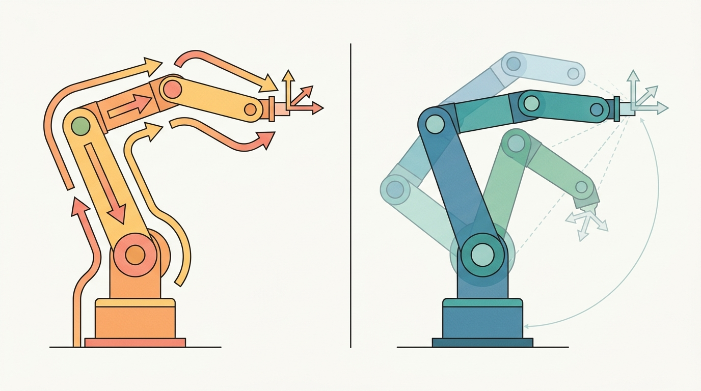

"The arm can reach the cup from the left or the right, over or under. Inverse kinematics must choose, and the choice is never free."
A Grasp Planner With Too Many Solutions

This section assumes familiarity with forward kinematics and the planar two-link arm introduced in section 5.5, and with the tool-pose representation from section 5.4. The Jacobian update used here is derived in detail in section 5.7, and task-space constraints that extend the numerical solver are covered in section 5.8. The IK techniques introduced here recur in Part IV when motion planners query the solver to validate candidate configurations during grasp and trajectory planning.
A surgical robot must place its tip at an exact point in 3D space, right now, while the patient breathes. You know where the tip must go; the question is which joint angles get it there. That is the inverse kinematics problem, and it is the gateway between high-level intent and physical motion for every embodied AI system. Analytic solvers give microsecond closed-form answers but shatter on redundant or underspecified arms. Jacobian-based numerical methods generalize gracefully but slow down near singularities. Learned models skip the geometry entirely but can violate joint limits silently. Here you will derive all three approaches, understand when each breaks, and implement a damped Jacobian solver you can trust on real hardware.
This section develops the technical contract for Inverse kinematics: analytic, numerical (Jacobian), and learned into a usable mental model. First we define the object of study, then we connect it to the agent loop, then we test it with a compact implementation.
The key question in Inverse kinematics: analytic, numerical (Jacobian), and learned is practical: what must the agent know, what can it observe, what action is available, and what evidence shows that the action worked under the stated conditions?
A representation earns its place when it changes the measurable action interface. In Inverse kinematics: analytic, numerical (Jacobian), and learned, the reader should keep asking which decision becomes easier, safer, or more reliable.
Theory
For Inverse kinematics: analytic, numerical (Jacobian), and learned, the practical design rule is to make the interface inspectable before optimization begins: inputs, outputs, units, latency, bounds, and failure labels should all be visible in the saved artifact.
Inverse kinematics asks the harder direction: given a desired tool pose, which joint vector should produce it? The answer may be unique, absent, or one of many valid configurations. That is why every inverse-kinematics result must report the target frame, seed, residual, joint-limit margin, and whether the solver proved feasibility or merely stopped improving.
Analytic IK uses closed-form geometry when the arm structure permits it. Numerical IK iteratively reduces pose error with a Jacobian update. Learned IK uses data to predict candidate joint values, but still needs forward-kinematics and constraint checks because a confident prediction is not a feasible one, and a neural network will never tell you it went past a joint limit.
Choosing Among the Three Approaches
The three approaches occupy different points in a speed-accuracy-generality trade-off:
- Analytic IK is fastest and most reliable for arms with a specific structure, typically six-DOF arms with a spherical wrist such as the UR5 or KUKA iiwa. The wrist center decouples position from orientation, and each configuration branch has a closed-form expression. This decoupling matters in embodied AI because any solver that cannot separate position from orientation must search a coupled six-dimensional space at every control tick; on a 1 kHz real-time loop there is no time for that search. A spherical wrist (three revolute joints whose axes intersect at one point) makes position and orientation independently solvable: the first three joints place the wrist center, and the last three joints rotate the tool without moving that center. Concretely, given a desired end-effector pose the wrist center position is computed by subtracting the tool-offset vector along the approach axis, then the shoulder-elbow-wrist triangle is solved with the law of cosines, yielding at most two elbow branches (elbow-up, elbow-down); the wrist Euler angles are then read from the remaining rotation matrix by inspection.
- Numerical IK generalizes to arbitrary kinematic structures and task-space constraints, but can converge to the wrong branch depending on the seed, slow down near singularities, or fail to converge at all when the target is just inside the workspace boundary.
- Learned IK (IKFlow, IKNet, diffusion-based samplers) is fast at inference and can propose diverse solutions for redundant arms, but requires training data that covers the relevant workspace and cannot enforce hard joint limits without a post-hoc feasibility check.
The practical pattern is to use analytic IK when the structure allows it, numerical IK (damped least-squares or sequential quadratic programming) when constraints or redundancy matter, and learned IK as a seed generator for numerical refinement rather than as a standalone solver. The latency gap is striking: analytic IK on a UR5 solves in roughly 0.01 ms, a Jacobian solver converges in 1-5 ms over 20-50 iterations, and a learned network infers in about 0.3 ms but then requires a forward-kinematics verification pass that adds another 0.05 ms per candidate. Choose wrong and your real-time controller misses its 1 ms deadline.
The mechanism in Inverse kinematics: analytic, numerical (Jacobian), and learned is the contract between representation and action. Name what enters the module, what leaves it, which assumptions make that transformation valid, and which log would reveal a bad handoff.
Worked Example
The example solves position IK for the planar two-link arm from Section 5.5 with the damped least-squares update $\Delta q=J^\top(JJ^\top+\lambda^2 I)^{-1}\Delta x$, then replays the solution through forward kinematics to confirm the reached pose. Damping keeps the step bounded when the arm stretches toward a near-singular reach.
import numpy as np
l1, l2 = 0.5, 0.4
def fk(q):
x = l1*np.cos(q[0]) + l2*np.cos(q[0]+q[1])
y = l1*np.sin(q[0]) + l2*np.sin(q[0]+q[1])
return np.array([x, y])
def jacobian(q):
s1, s12 = np.sin(q[0]), np.sin(q[0]+q[1])
c1, c12 = np.cos(q[0]), np.cos(q[0]+q[1])
return np.array([[-l1*s1 - l2*s12, -l2*s12],
[ l1*c1 + l2*c12, l2*c12]])
def ik_dls(target, q0, lam=0.05, iters=200, tol=1e-6):
q = q0.astype(float).copy()
for k in range(iters):
dx = target - fk(q)
if np.linalg.norm(dx) < tol:
return q, k, np.linalg.norm(dx), True
J = jacobian(q)
dq = J.T @ np.linalg.solve(J @ J.T + lam**2*np.eye(2), dx)
q += np.clip(dq, -0.2, 0.2) # clamp per-step joint increment
return q, iters, np.linalg.norm(target - fk(q)), False
target = np.array([0.6, 0.3])
q_sol, iters, res, ok = ik_dls(target, q0=np.deg2rad([10.0, 10.0]))
print("converged:", ok, "iters:", iters, "residual:", f"{res:.2e}")
print("solution (deg):", np.round(np.rad2deg(q_sol), 3))
print("FK replay :", np.round(fk(q_sol), 6), "target:", target)
# Unreachable target (beyond l1+l2 = 0.9 m): solver must NOT report success
_, _, res_far, ok_far = ik_dls(np.array([1.5, 0.0]), q0=np.deg2rad([10.0, 10.0]))
print("far target -> converged:", ok_far, "residual:", f"{res_far:.3f} m")
The FK replay closes the loop: a solver that returns its last iterate without checking the residual would silently pass the unreachable target. Reporting convergence flag, residual, and an FK replay together is what separates a usable IK result from a stopped optimizer.
Students often assume that a "converged: True" result with a small residual means the IK solution is correct, unique, and safe to send to the hardware. This is wrong in embodied AI contexts because convergence only means the optimizer stopped improving, not that it found the right branch, respected joint limits throughout the iteration, or produced a configuration reachable from the current arm posture. A Jacobian solver seeded far from the current state can converge to the elbow-up branch while the physical arm sits in elbow-down, producing a large joint discontinuity that trips velocity limits and triggers an emergency stop. The correct mental model is: convergence plus a small residual is a necessary condition, not a sufficient one; you must also verify joint-limit compliance, check that the solution branch matches the current posture, and confirm that the required joint displacement is within the velocity budget for the control period.
Instead of holding the damping constant at a fixed $\lambda$, use the Sugihara adaptive rule: set $\lambda^2 = \epsilon_{\max}^2 \cdot \|\Delta x\|^2$ where $\epsilon_{\max}$ is the maximum acceptable position error (commonly 1e-3 m). This ties damping to current task error, so the solver moves aggressively when far from the target and automatically becomes conservative near convergence, avoiding the manual tuning that causes divergence at the boundary of the workspace. In Pinocchio, pass this computed $\lambda$ to pin.computeMinverse or the damped pseudo-inverse helper rather than hard-coding a value like 0.05 that works only in one test case.
The inverse-kinematics fragment should expose residual, seed, joint limits, damping, convergence status, and unreachable targets. MoveIt 2, Drake, and Pinocchio are production tools, but the small solve explains failure.
Practical Recipe
- Verify the URDF joint limits match the physical hardware before running a single IK query. On the Franka Panda, joint 4 has an asymmetric limit of [-3.0748, -0.0698] rad; solvers initialized outside this range silently clamp the seed and return a configuration the physical arm refuses.
- Choose a seed from the current joint state, not from zero or a fixed home posture. Zero-seeding a 7-DOF arm like the Franka Panda reliably converges to the elbow-up branch even when the arm is physically in an elbow-down posture, producing a discontinuous jump that triggers the joint-velocity limit (2.175 rad/s on joints 1-4) and an emergency stop.
- Test reachability at the workspace boundary before committing to a trajectory. In MuJoCo or Isaac Sim, sweep the target along a line approaching the boundary and log residual vs. distance; a residual that grows from 0.001 m to 0.01 m over the last 5 cm of travel is the warning that the solver is about to fail mid-trajectory in hardware deployment.
- After any contact event (a grasp close, a push, a surface touch) re-seed the IK solver from the post-contact joint encoder values, not from the pre-contact solution. Contact forces produce 0.5-2 mm of Cartesian deflection on a compliant arm such as the Panda, and the stale seed produces a 5-10 iteration penalty on the next solve that can violate a 1 ms real-time budget.
- When using a learned IK model (IKFlow or a diffusion sampler) in a sim-to-real pipeline, validate candidate joint vectors with a forward-kinematics pass inside the same physics model used for training. A candidate that passes FK in MuJoCo may violate self-collision constraints on the physical arm because the collision mesh in the URDF includes rubber bumpers that were omitted from the simplified sim geometry.
The most common IK failure in deployed manipulation stacks is a frame mismatch between the planner and the controller. MoveIt 2 returns solutions in the robot base frame, but if the base is mounted on a mobile platform (a Spot arm, a PR2, a Stretch RE2) the base frame moves between planning and execution. A 5 cm base drift during arm extension translates to a 0.05 rad joint error at the shoulder, which the low-level joint controller does not know to compensate. Always transform the IK target into the current base frame at execution time, not at planning time.
The Open X-Embodiment dataset contains IK-solved trajectories from 22 robot embodiments including the Franka Panda, Google RT robot, and WidowX. The per-embodiment joint-limit distributions in that dataset reveal which workspace regions each solver explores and which it avoids. Inspecting the joint-angle histograms for a target embodiment before training a learned IK model shows whether the training distribution actually covers the workspace region your deployment task requires.
Every IK solution is a promise from the solver to the hardware. Analytic IK makes that promise in closed form and keeps it exactly. Jacobian IK makes it iteratively and keeps it to within the convergence tolerance. Learned IK makes it statistically and may break it silently. The FK replay is how you check whether the promise was kept before sending the joint command to the actuators.
For Inverse kinematics: analytic, numerical (Jacobian), and learned, treat frontier claims as hypotheses until they expose enough detail to reproduce the result: data boundary, embodiment, controller interface, evaluation panel, and failure cases.
Can you name the observation, state estimate, action, success metric, and most likely failure mode for Inverse kinematics: analytic, numerical (Jacobian), and learned? If not, the system boundary is still too vague.
Production Pattern
Inverse kinematics: analytic, numerical (Jacobian), and learned sits inside the Part II robotics contract: geometry defines where things are, kinematics defines what motion is possible, dynamics defines what motion costs, control defines how errors are corrected, and sensing defines what the agent can know on time.
Treat inverse kinematics as constrained search, with residuals, limits, seeds, and infeasibility explicitly logged. This makes the section useful to students, builders, and researchers at the same time: the idea has an intuitive role, a formal interface, a runnable check, and a failure mode that can be reproduced.
For Inverse kinematics: analytic, numerical (Jacobian), and learned, kinematics maps joint or body motion into task-space motion without explaining forces. Preserve joint limits, frame conventions, velocity units, and singularity margins in the artifact.
| Tool or Library | What It Handles | Verification Check |
|---|---|---|
| Pinocchio | computes articulated-body kinematics, dynamics, and derivatives | Verify model frames, joint ordering, and derivative convention against the URDF. |
| Robotics Toolbox for Python | supports practical work on Inverse kinematics: analytic, numerical (Jacobian), and learned | Verify the library output against the hand-built baseline on one small case. |
| MoveIt 2 | supports practical work on Inverse kinematics: analytic, numerical (Jacobian), and learned | Verify the library output against the hand-built baseline on one small case. |
| Drake | models dynamical systems, multibody plants, optimization, and controllers | Verify scalar type, plant finalization, frame convention, and solver status. |
| ROS 2 control | supports practical work on Inverse kinematics: analytic, numerical (Jacobian), and learned | Verify the library output against the hand-built baseline on one small case. |
Use this recipe when turning Inverse kinematics: analytic, numerical (Jacobian), and learned into code, a simulator experiment, or a robot diagnostic. The point is not to use every library. The point is to keep the hand-built baseline and the maintained-tool path comparable.
- Write the joint vector, frame target, velocity convention, and constraint set before solving.
- Check forward kinematics on a known posture, then perturb one joint and inspect the end-effector delta.
- Compare an analytic or numerical Jacobian with Pinocchio, Robotics Toolbox, or Drake on the same robot model.
- Log residual error, joint-limit distance, manipulability, and solver iteration count in one artifact.
- Treat singularities and infeasible targets as design signals, not as solver annoyances.
For Inverse kinematics: analytic, numerical (Jacobian), and learned, compare methods only through one saved artifact that preserves the inputs, outputs, units, timestamps, latency budget, configuration, seed, metric definition, and failure labels relevant to this section. The comparison is meaningful only when the same script evaluates the same panel.
Extend the section exercise by adding one perturbation specific to Inverse kinematics: analytic, numerical (Jacobian), and learned and one latency or uncertainty check. Save the result in the EvidenceRecord schema, then explain which library output you trust and why.
Kinematic failures often arrive as a plausible pose with an impossible motion. Inspect target reachability, seed choice, residual definition, joint limits, damping, and frame convention before blaming the planner. For this section, first reproduce one planar inverse-kinematics target by hand, then rerun it through Pinocchio, Robotics Toolbox for Python, MoveIt 2, Drake, or a learned candidate generator with a forward-kinematics verifier. If the two disagree, inspect conventions and timing before changing the model.
Technical Core
Inverse kinematics: analytic, numerical (Jacobian), and learned needs a topic-native core: variables, equations or system contracts, an algorithmic procedure, an expected output, and a failure diagnosis. Figure 5.6.T summarizes the chain this section must preserve when moving from a teaching example to a real embodied system.
Given $T^\star$, find $q$ such that $T_{0e}(q)\approx T^\star$, while satisfying $q_{\min}\le q\le q_{\max}$ and any task constraints. A common numerical update is $\Delta q=J^\top(JJ^\top+\lambda^2 I)^{-1}\Delta x$.
The residual $\Delta x$ must be expressed in the same frame as the Jacobian. The damping term $\lambda$ trades speed for stability near singularities, and the seed $q_0$ influences which branch or redundant posture the solver finds.
- Represent the desired end-effector task as a pose error in the same frame as the Jacobian.
- Compute the geometric or analytic Jacobian at the current joint vector and choose damping from the smallest singular value.
- Solve the damped least-squares update, clamp joint increments, and enforce joint limits after every iteration.
- Forward-propagate the candidate with forward kinematics and log residual task error, condition number, seed, branch, and saturation events.
- For learned IK, treat the model output as a seed or candidate set, then run the same forward-kinematics and constraint checks.
| Contract Field | What To Specify | Why It Matters |
|---|---|---|
| State and observation | Variables, units, timestamps, frames, and uncertainty. | Prevents a model score from being mistaken for robot capability. |
| Action interface | Command type, limits, update rate, and safety fallback. | Makes the learned or planned output executable. |
| Evidence artifact | Trace, metric, configuration, seed, and failure label. | Allows baseline and library path to be compared in one pass. |
| Tool path | Modern Robotics, Pinocchio, Drake, ROS 2 tf2, MoveIt, NumPy | Shows the practical library route after the mechanism is understood. |
Expected output is a bounded joint vector, a residual below the task tolerance, a forward-kinematics replay of the reached pose, and a clear infeasibility label when no solution exists. A residual that grows after damping usually means the error vector and Jacobian use different frames.
Inverse kinematics fails when the solver reports the last iterate as success, a learned model predicts joints outside limits, a redundant arm drifts into a joint limit, or the algorithm reduces position error while making orientation impossible.
Section References
Core references for Inverse kinematics: analytic, numerical (Jacobian), and learned: Modern Robotics; Murray, Li, and Sastry; Siciliano et al.; LaValle; and official documentation for Drake, MuJoCo, Pinocchio, CasADi, python-control, GTSAM, ROS 2, and OpenCV as applicable.
Use these references to check notation, frame conventions, units, solver assumptions, and maintained-library behavior.
Inverse kinematics: analytic, numerical (Jacobian), and learned is useful when it makes the perception-action loop more reliable, not when it merely adds a more impressive model name.
Design a method-matched experiment for Inverse kinematics: analytic, numerical (Jacobian), and learned. Specify the environment, observations, actions, metric, one perturbation, and the library output you would compare against the hand-built baseline.